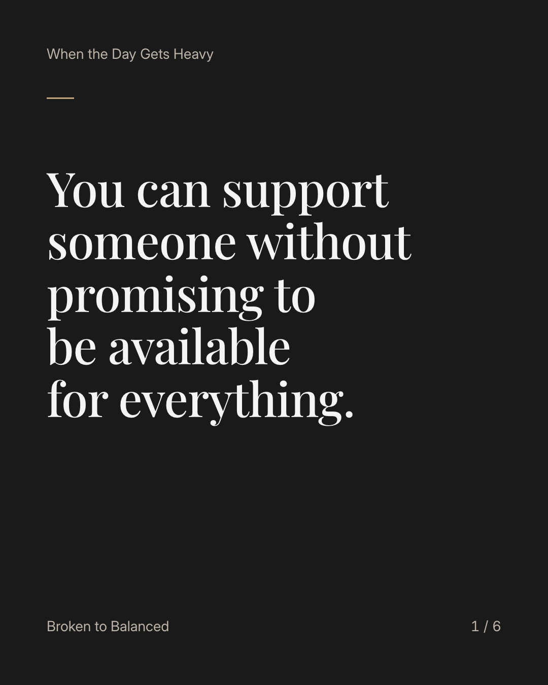
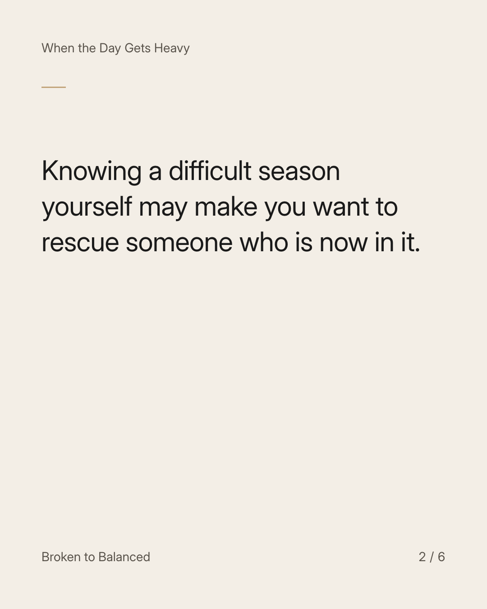
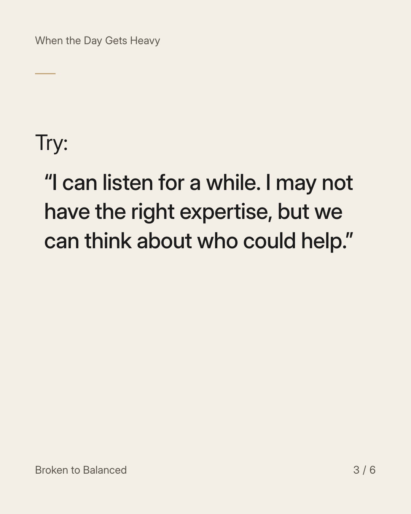
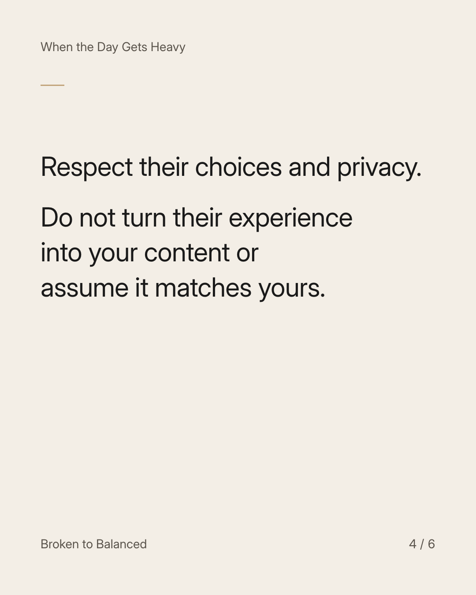
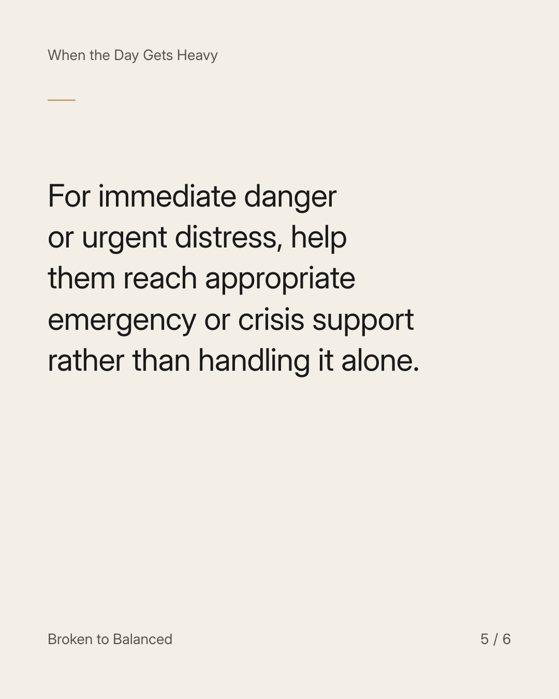
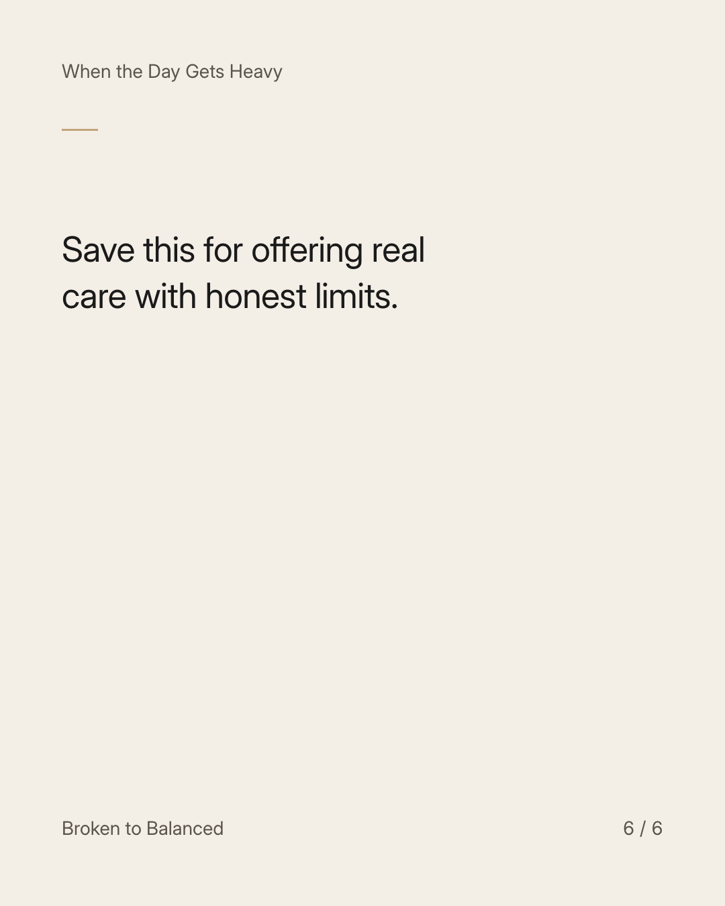

Exact text and accessibility text
You can support someone without promising to be available for everything.
Slide 1 of 6. You can support someone without promising to be available for everything.


Exact text and accessibility text
Knowing a difficult season yourself may make you want to rescue someone who is now in it.
Slide 2 of 6. Knowing a difficult season yourself may make you want to rescue someone who is now in it.


Exact text and accessibility text
Try: “I can listen for a while. I may not have the right expertise, but we can think about who could help.”
Slide 3 of 6. Try: “I can listen for a while. I may not have the right expertise, but we can think about who could help.”


Exact text and accessibility text
Respect their choices and privacy. Do not turn their experience into your content or assume it matches yours.
Slide 4 of 6. Respect their choices and privacy. Do not turn their experience into your content or assume it matches yours.


Exact text and accessibility text
For immediate danger or urgent distress, help them reach appropriate emergency or crisis support rather than handling it alone.
Slide 5 of 6. For immediate danger or urgent distress, help them reach appropriate emergency or crisis support rather than handling it alone.


Exact text and accessibility text
Save this for offering real care with honest limits.
Slide 6 of 6. Save this for offering real care with honest limits.
Exact caption
Plain-text fallback: select and copy the caption.